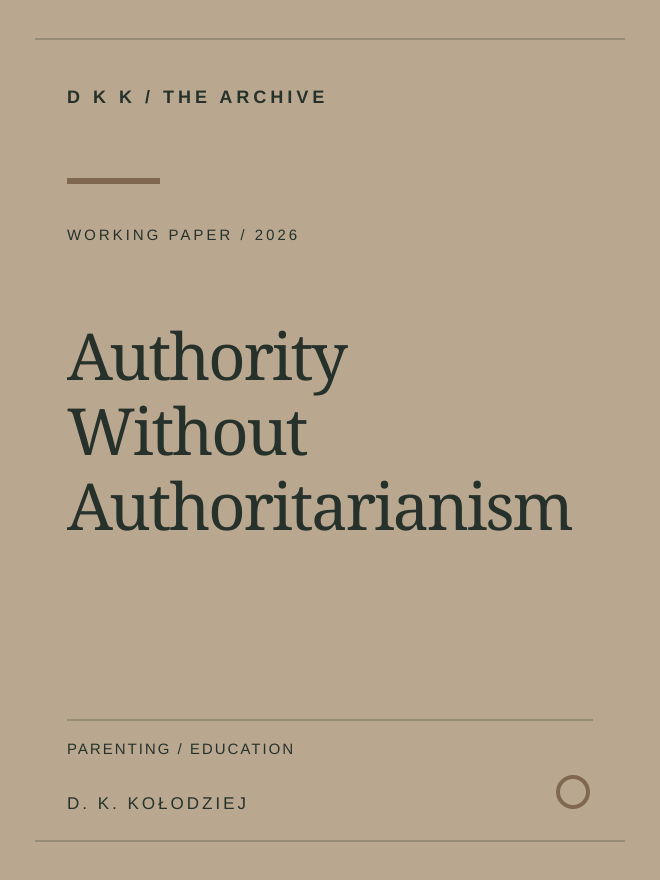

← Back to the library
Education / Working paper
Authority Without Authoritarianism: Legitimising Parental and Teacher Influence in the Education of Young People
A working paper on educational authority and legitimate influence
A working paper exploring how parents and teachers can exercise legitimate educational influence without relying on authoritarian approaches.
Year2026
FormatWorking paper
SubjectEducation
STATUSPublished
Permanent publication URLhttps://dkk.hqici.com/works/authority-without-authoritarianism/
